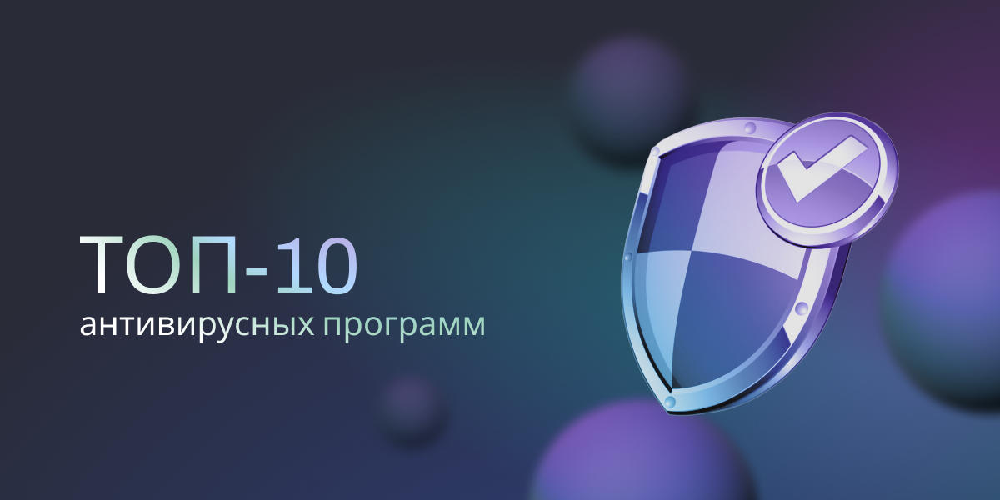
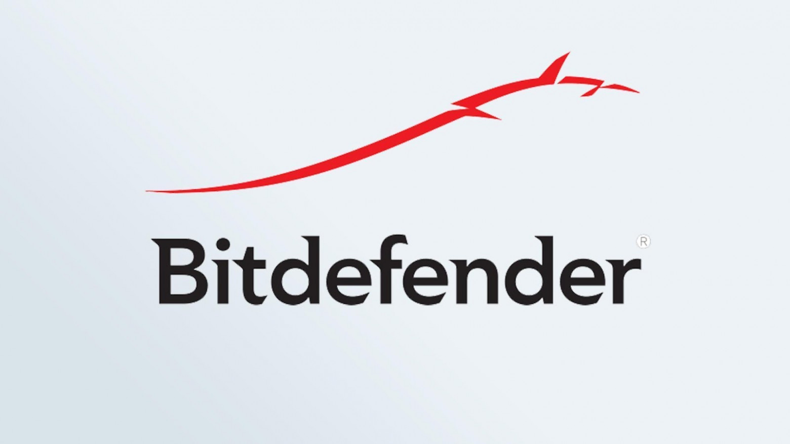

Рейтинг антивирусного ПО для Windows составлен на основе обзоров ведущих западных и отечественных журналов по кибербезопасности. Для анализа были взяты материалы из топ-10 Яндекса и Google — список формировался по ряду последних частотных запросов, в том числе «лучший антивирус 2022», «топ антивирусов 2022», «top antivirus 2022», «best antivirus 2022».
Были рассмотрены как платные, так и бесплатные приложения, часть из которых тоже попали в рейтинг. Также сделан подробный анализ каждой антивирусной программы, вошедшей в топ-10.
За первое место в каждом из обзоров антивирусное ПО получало 10 баллов. Далее за каждое последующее место очередное приложение получало на балл меньше, то есть 9 за второе, 8 за третье и вплоть до 1 балла за 10-е место (если это место фигурировало в обзоре, поскольку некоторые авторы не посчитали нужным выделять более 7-8 разработчиков). После все баллы суммировались, и приложения распределялись в рейтинге на основе общего количества набранных баллов. Что касается ведущих российских продуктов (в особенности Kaspersky), они были оставлены на тех же местах, на которых фигурировали в прошлогодних обзорах тех же сайтов, если ссылки на эти обзоры еще были активны. О причине такого решения рассказываем ниже в разделе «Общий рейтинг антивирусных программ».
Для анализа были отобраны не отдельные пакеты, а группы пакетов, выпускаемые отдельными разработчиками. Например, платные и бесплатные или платные разного уровня, то есть с различной функциональностью и стоимостью. Причина такого решения проста: все пакеты одного разработчика работают по одним и тем же алгоритмам, а значит с одинаковой эффективностью справляются со своей основной работой. Также мы намеренно не делили приложения по наличию и степени монетизации.
Цель обзора — выбор наиболее мощной группы антивирусных пакетов среди всех имеющихся, прежде всего, по качеству работы. И далее как раз о тех критериях, по которым специалисты тестировали антивирусное ПО.
Существует три основных требования, которым должен соответствовать антивирусный пакет, претендующий на первые строчки рейтинга:
Высокий процент и высокая скорость обнаружения вредоносного ПО.
Удобство использования: понятный интерфейс, отсутствие частых всплывающих сообщений, минимальное количество ложных срабатываний.
Минимальное влияние на производительность системы.
Первый критерий — безусловно, самый важный. То есть, если антивирусное ПО почти не грузит систему и легко настраивается, но при этом приложение пропускает критические угрозы, пользы от него немного. Поэтому почти все пакеты, попавшие в топ-10, обладают очень хорошим уровнем обнаружения и нейтрализации киберугроз. В первом пункте также важно сочетание высокого процента и высокой скорости обнаружения. Если угрозы обнаруживаются быстро, но не все — это плохо. Но немногим лучше, когда угрозы обнаруживаются, но медленно, так как запоздалая реакция на угрозу может позволить вирусам натворить немало дел перед тем, как их обнаружат.
Однако это еще не все моменты, которые следует учитывать. В наше время многие антивирусные пакеты поставляются не в «чистом» виде, как это было лет двадцать назад, а с дополнительными функциями. Это, например, возможность резервного копирования для важных файлов, наличие приложения для безопасности мобильных устройств, продвинутый брандмауэр, функции родительского контроля, возможность использовать купленную программу сразу на нескольких устройствах или ПК. Добавим сюда функции уничтожения файлов, возможность включения VPN и обеспечение конфиденциальности, веб-защиту в режиме реального времени и программу для сканирования электронной почты, а также ряд других полезных функций. Поэтому наборы дополнительных услуг и их соответствие стоимости также учитывались, хотя и не в первую очередь.
Ниже представлен полный список критериев — в порядке убывания значимости. Именно по ним специалисты определяли лучшие антивирусные программы текущего года, а мы составили сводный рейтинг:
Результаты тестирования независимыми лабораториями. Это такие лаборатории, как AV-Test Institute, SE Labs, AV-Comparatives и ряд других. При этом учитывались результаты как краткосрочного, так и длительного тестирования (в течение нескольких месяцев). Последнее необходимо для проверки качества обнаружения шпионского, рекламного ПО и некоторых других типов вредоносных программ.
Процент ложных срабатываний. Новые вредоносные программы появляются ежедневно, и редкое антивирусное программное обеспечение может регулярно обнаруживать их все, то есть в 100% случаев. Но для удобства пользователей очень важно решить проблему ложных срабатываний. Поэтому, если антивирусник не слишком «остро» реагирует на каждую не типичную ситуацию и позволяет вам свободно просматривать файлы и сайты без ухудшения качества сканирования, ему это только в плюс.
Дополнительные функции и их стоимость. Об этом уже было сказано выше.
Поддерживаемые устройства. Если вы нашли лучший антивирус для Windows 11 , это не значит, что он будет работать на вашем смартфоне. Поэтому универсальность тоже важна.
Производительность. Если у вас не новейший ПК, антивирусное сканирование может снизить производительность. Поэтому низкая нагрузка на систему может стать дополнительным фактором для поднятия антивирусного пакета в рейтинге.
Простота использования. Каким бы сложным ни было лучшее антивирусное ПО, даже не слишком опытный пользователь должен иметь возможность сканировать свой компьютер или другое устройство без значительных неудобств.
Цена. Пытаться сэкономить на защите своих устройств не слишком хорошая идея. Но с другой стороны, нет причин выбирать программное обеспечение, которое предлагается по заведомо завышенной цене. И если по самым важным критериям оценки два пакета примерно равны, выше будет стоять тот, который предлагает те же возможности по более доступной цене.
После подсчета всех баллов (список ссылок на главные обзоры, которые мы использовали для составления рейтинга, вы найдете в конце статьи) антивирусные продукты заняли следующие места:
Bitdefender — 67
Kaspersky — 65
Norton — 64
McAfee — 53
Avast — 50
Avira — 38
Windows Defender — 29
Trend Micro — 27
TotalAV — 25
AVG — 25
Интересно, что российский флагман Kaspersky занял почетное второе место. И это несмотря на то, что он был искусственно понижен в ряде обзоров, недосчитавшись из-за этого добрых пары десятков баллов. Авторы ряда авторитетных журналов (например, Tom's Guide или TechRadar) честно признают, что Kaspersky всё равно остается лучшим по критически важным показателям, но отдать ему первое место не могут по причинам, о которых будет написано ниже.
Также интересно, что не попали в топ-10 такие известные продукты, как, например, Webroot, Emsisoft, Bullguard, ESET и Panda. А TotalAV стоит выше AVG благодаря наиболее высокому месту в одном из обзоров. Теперь рассмотрим эти антивирусные приложения более подробно, а если не хотите много читать, прямо под описанием каждого кратко перечислены его плюсы и минусы.
Авторы большинства обзоров отмечают высокие показатели обнаружения вредоносных программ этого антивирусного ПО. Однако при этом активное фоновое сканирование Bitdefender влияет на производительность системы. Поэтому на слабых ПК, находясь в интернете, не рекомендуется запускать какие-то другие приложения, кроме самых легких.
Пользователи Windows могут воспользоваться встроенными функциями Bitdefender: менеджером паролей, надежным средством уничтожения файлов (программой-шредером), а также мощной Ransomware-защитой и функциями для повышения конфиденциальности при работе в интернете. Эти функции, которые в Bitdefender включены в платный пакет начального уровня, как правило, встречаются лишь в премиум-пакетах, поэтому для бюджетного решения это однозначный плюс.
Кроме того, Bitdefender добавляет к этим возможностям родительский контроль, защиту веб-камеры, а также двусторонний брандмауэр, фильтрующий не только входящий, но и исходящий трафик. А пакет Total Security (далее TS) имеет встроенную защиту для ноутбуков и программу для оптимизации операционной системы. Еще один продукт разработчика, Premium Security, представляет собой улучшенный TS с неограниченным VPN и кросс-платформенным менеджером паролей. Также отличным решением является пакет для семейного использования, позволяющий установить TS сразу на 15 устройств за умеренную плату.
Плюсы
Надежная защита от вредоносного ПО
Расширенный пакет включает безлимитный VPN
Несколько дополнительных функций
Простой и удобный интерфейс
Минусы
Не поддерживает шифрования данных
Сильная фоновая загрузка системы
Все продукты «Лаборатории Касперского» для Windows отлично справляются с нейтрализацией вредоносного ПО и при этом не сильно влияют на производительность системы. А в программу начального уровня встроена даже защита от Ransomware. По этому показателю его превосходит только Bitdefender, бесплатная версия которого предлагает несколько больше возможностей.
В пакете среднего уровня от «Лаборатории Касперского» есть функции для безопасности браузера, защиты ноутбуков от кражи и веб-камеры. Кроме того, он может предложить VPN (правда, с ограничениями трафика), который автоматически включается при подключении к Wi-Fi. Также в этот пакет включено ПО для Android, iOS для мобильных устройств и macOS для компьютеров. Антивирусный пакет класса премиум от Kaspersky включает возможность резервного копирования, шифрование, программу-шредер, родительский контроль и менеджер паролей без каких-либо ограничений.
Авторы нескольких западных обзоров на крупных сайтах пишут, что это лучшее антивирусное ПО, которое можно купить сегодня. Например, автор данного обзора указал, что во всех (!) тестах антивирус Касперского показал 100%-ю надежность, то есть заблокировал абсолютно все угрозы. Однако большинство западных специалистов по кибербезопасности занизили оценку российским разработчикам, сославшись на подозрения в сотрудничестве с российскими спецслужбами. И хотя разговоры об этом велись уже давно, никаких реальных доказательств политической ангажированности корпорации Kaspersky западные специалисты предоставить так и не смогли.
Плюсы
Прекрасная защита от вредоносного ПО
Менеджер паролей без ограничений
Новая встроенная защита от сталкинга
Низкое потребление ресурсов в фоновом режиме
Минусы
Ограничения VPN
В пакете начального уровня не так много функций
Любой продукт Norton обеспечивает отличную защиту от вредоносного ПО, а серьезная нагрузка на производительность системы с последними версиями стала намного меньше. Лучшим пакетом от разработчика является 360 Deluxe, обладающий оптимальным набором функций.
В нем есть менеджер паролей, который работает на всех основных платформах, безлимитный VPN-сервис, контроль за личными данными при работе в интернете, а также до 50 ГБ места в «облаке». Другие пакеты предоставляют еще больше места для хранения данных и расширяют количество подключаемых устройств.
Если вам нужна полная конфиденциальность, Norton предлагает решение и на этот случай. Пакеты LifeLock различаются по уровню обслуживания и при этом предлагают еще больший объем онлайн-хранилища. Цены на них, конечно, выше, но всё равно каждый из этих пакетов стоит меньше, чем если покупать приложение по защите конфиденциальности, менеджер паролей, место в «облаке» и антивирусное ПО по отдельности.
В отличие от ряда других разработчиков антивирусного ПО, Norton не предлагает программ для безвозвратного уничтожения данных (шредеров), шифрования или конфиденциального веб-браузера ни в одном из своих пакетов. Однако другие распространенные услуги для защиты компьютеров и отдельных файлов включены, по крайней мере, в один из пакетов.
Плюсы
Отличная защита от вредоносного ПО
Функция резервного копирования, облачное хранилище, менеджер паролей
Безлимитный VPN
Полноценная защита конфиденциальности
Минимальная потеря производительности при онлайн-сканировании
Минусы
Достаточно дорогое ПО
Нет уничтожителя и шифровальщика файлов
Значительные «тормоза» при полном сканировании, особенно на слабых системах
Разработчики McAfee смогли значительно улучшить показатели обнаружения вредоносного ПО, но этого пока не хватает, чтобы войти в топ-3. Тем не менее антивирусный пакет McAfee начального уровня — выгодная покупка: это ПО рассчитано сразу на 10 устройств, причем антивирус может работать на любой распространенной ОС. При этом пакет поставляется с программой-шредером и двусторонним брандмауэром.
Однако, чтобы получить, например, возможности для родительского контроля или менеджер паролей, придется выбрать один из более дорогих пакетов. Плюс здесь только в том, что они нередко уже предустановлены на некоторых новых ПК. Эти пакеты также включают защиту конфиденциальности. Но их минус в том, что они не могут предложить защиту веб-браузера, которая включена в антивирусные решения премиум-класса от других разработчиков.
Первое место по функциональности среди пакетов этого разработчика занимает Ultimate, добавляющий неограниченный VPN-сервис, и это серьезное преимущество даже в сравнении с продуктами первой тройки. Геймеры же могут рассмотреть пакет Gamer Security, предлагающий достаточно надежную защиту для одного ПК.
Плюсы
Неограниченный VPN-сервис, повышенный уровень конфиденциальности
Инновационная защита от мошеннического ПО
Дружественный интерфейс
Минусы
Сильная загрузка системы при сканировании
Отсутствие защиты браузера
Некоторые функции не будут работать при отключении автообновления
Одно из самых известных бесплатных антивирусных приложений продолжает оставаться таковым, поддерживая и ряд платных функций, если пользователю нужно, например, поставить программу на несколько устройств или обеспечить дополнительную защиту.
Авторы обзоров отмечают лучшую среди конкурентов функцию интеллектуального сканирования группы пакетов Avast One. Когда вы запускаете Avast One впервые, он предлагает провести такую проверку. Интеллектуальное сканирование сочетает проверку на предмет наличия в системе вредоносного ПО с мониторингом других проблем. Это, например, замеченные средства отслеживания браузера (трекеры) или большое количество временных файлов в системе. Идея здесь в том, чтобы очистить компьютер и обеспечить его стабильную работу, а не просто сканировать на наличие вредоносных программ. И реализовано это у Avast лучше, чем у конкурентов, поскольку пакеты других разработчиков поставляются с утилитами для очистки и обслуживания ПК, которые чаще всего требуют активации.
Ключевые функции безопасности Avast включают программу отслеживания изменений в файлах на предмет подозрительного поведения, защиту от программ-вымогателей, веб-экран для обеспечения безопасности в интернете. Также здесь простой в использовании брандмауэр, позволяющий блокировать доступ в интернет для каждого приложения, и есть защита веб-камеры.
Платный пакет Individual позволяет установить антивирусник на пять устройств, а пакет Family предоставляет возможность создать сразу шесть учетных записей с покрытием 30 устройств. Если вам не подходит платный пакет, у «Аваста» есть Essential, который включает в себя множество бесплатных функций, в том числе еженедельные 5 ГБ для использования VPN. Но в бесплатной версии недоступны такие возможности, как защита конфиденциальности личных данных и веб-камеры, а также некоторые функции оптимизации (очистка диска, обновление драйверов).
Плюсы
Удобный интерфейс
Доступная цена
Минимальная нагрузка на систему при сканировании
Минусы
Интеллектуальное сканирование требует слишком большого внимания от пользователя из-за множества функций
Предлагает установить Google Chrome
Avira — тоже неплохое антивирусное решение с рядом важных бесплатных функций. В бесплатном пакете вы найдете VPN, брандмауэр и генератор паролей. И это при том, что большинство других разработчиков заставят вас доплачивать за некоторые или за каждую из этих возможностей. Кроме того, антивирус имеет расширенную защиту от программ-вымогателей, полную веб-защиту для безопасных покупок в интернете, а также защиту электронной почты. Еще у Avira есть функция автоматического обновления и менеджер паролей.
Что выгодно отличает «Авиру» от других антивирусов, так это инструменты оптимизации системы. Например, вы можете программно ускорить загрузку вашей системы или сконцентрировать системные ресурсы на выполнении одной ресурсоемкой задачи.
Что касается главной функции, антивирусной защиты, то, по оценке независимых тестовых лабораторий, таких как AV-Test и AV-Comparatives, Avira успешно блокирует 99,2% киберугроз. Поэтому антивирусное ПО данного разработчика оценивается как сбалансированный инструмент безопасности с точки зрения сочетания функций защиты от вредоносных программ и производительности. А помимо неплохих результатов тестирования, Avira также предлагает выгодное соотношение цены и качества.
Антивирус совместим с устройствами Windows, macOS, Android и iOS и является одним из наиболее удобных для пользователей. Однако для macOS доступны не все функции — защитой электронной почты и сканированием загрузок пока могут пользоваться только обладатели ОС Windows.
Плюсы
Приемлемый для обычного пользователя уровень безопасности
Возможность перераспределять ресурсы системы
Низкая цена за премиум-пакеты
Минусы
Некоторые функции доступны только в Windows
Бесплатная версия ограничивает использование VPN
Встроенное антивирусное программное обеспечение от Microsoft уже несколько лет подряд составляет серьезную конкуренцию даже топовым антивирусным пакетам, демонстрируя впечатляющие показатели обнаружения и блокирования вредоносных программ. И хотя Защитник Windows, также известный как Microsoft Defender Antivirus, не побеждает разработчиков первой тройки (Kaspersky, Bitdefender и Norton) в лабораторных тестах по защите от вредоносного ПО, он уже опережает в этих тестах бесплатные версии Avast, Avira, AVG и даже многие платные антивирусные продукты.
Конечно, много дополнительных функций с самим Защитником Windows вы не получите, но дело в том, что в Windows 10 уже есть родительский контроль, игровой режим и встроенная защита для собственных браузеров Microsoft: Edge и Internet Explorer. Встроенного VPN, правда, тут нет, но зато вас не будут беспокоить всплывающие окна с попытками продать вам платный пакет от разработчика.
Microsoft Defender Antivirus — одно из лучших решений для простых пользователей Windows, которым не нужны функции продвинутой защиты, необходимые, например, для юридических лиц или специалистов. А его главные недостатки заключаются в сложности освоения планировщика сканирования и, главное, в отсутствии защиты для веб-браузеров, кроме Edge или Internet Explorer, которыми мало кто пользуется. Также здесь нет автономного менеджера паролей и уничтожителя файлов.
Плюсы
На Windows 10 и Win 8 установлен по умолчанию
Хорошая защита от вредоносных программ
Минусы
Cложно планировать сканирование
Мало функций, а некоторые возможности доступны только с продуктами Microsoft
Trend Micro предлагает хорошую защиту, но его механизм обнаружения вредоносных программ плохо оптимизирован, поэтому создает большую нагрузку на систему во время сканирования. Кроме того, этот антивирус имеет значительное количество ложных срабатываний.
Программа начального уровня Antivirus+ Security имеет все базовые инструменты, но не имеет функций для веб-безопасности: родительский контроль, оптимизация системы и средство для уничтожения файлов входят в пакет Internet Security, относящийся уже к среднему уровню. Пакет Maximum Security добавляет менеджер паролей, конфиденциальность браузера и шифрование файлов, а новый Premium Security — VPN и безопасность личных данных.
Тем не менее ни один из пакетов Trend Micro не включает двусторонний брандмауэр, а также защиту веб-камеры, стандартную для пакетов среднего уровня других разработчиков. Пакет премиум-класса также не имеет опций для резервного копирования, который лучшие бренды добавляют в качестве приятного бонуса в свои флагманские продукты.
Плюсы
Хорошая защита от вредоносных программ
Безопасный браузер для покупок в интернете
Сканирование сайтов на угрозы личным данным
Минусы
Много ложных срабатываний на некоторых тестах
Сильный удар по производительности системы во время сканирования
Недостаточно дополнительных функций
TotalAV является еще одним достойным внимания антивирусным пакетом, который также имеет полезные функции безопасности, предоставляемые бесплатно. Так, например, все пользователи бесплатно получают защиту от фишинга. При этом если вы приобретете подписку, ваша безопасность увеличится за счет функции защиты в реальном времени и защиты от программ-вымогателей.
Также платные пакеты включают сканирование файлов «на лету», очистку диска и ряд инструментов оптимизации системы, которые помогут, например, освободить место на жестком диске и сделать запуск более эффективным. Кроме того, TotalAV предлагает VPN с неограниченным объемом данных, менеджер паролей и блокировщик рекламы для обеспечения комфортного серфинга в интернете.
Стоит также отметить, что независимые тестовые лаборатории показывают: этот антивирус успешно блокирует 97% атак «нулевого дня» и 100% атак вредоносных программ месячной давности. То есть TotalAV не совсем хорошо справляется с новейшими угрозами, зато идеален против всех остальных. А поскольку у любого пакета TotalAV есть поддержка устройств Windows, macOS, Android и iOS, вы можете защитить любой компьютер, ноутбук или гаджет. Интерфейс мобильных приложений тоже хорошо организован и прост, как и сам процесс установки.
В целом, TotalAV — простое, но довольно мощное антивирусное решение. Он удалит большинство цифровых вредителей, пойманных во время веб-серфинга, но при этом не перегрузит ваше устройство. Этот антивирус можно смело рекомендовать всем, кому нужно простое решение для обеспечения безопасности прежде всего в автономном режиме. Однако тем, кому необходимо противостоять передовым угрозам, лучше выбрать один из продуктов выше по рейтингу.
Плюсы
Хорошая защита от большинства киберугроз
Интуитивно понятный интерфейс
Инструменты оптимизации
Минусы
Не всегда эффективен против новых угроз
Премиум-пакет устанавливается только на 6 устройств
AVG использует тот же механизм обнаружения вредоносных программ, что и Avast (обе группы приложений разрабатываются одной корпорацией), но при этом гораздо меньше нагружает систему. А причина, по которой AVG стоит в рейтинге гораздо ниже «Аваста» в том, что он имеет куда меньше полезных дополнительных функций, чем Avast — по крайней мере, в бесплатной версии.
Тем не менее этот антивирусный продукт отличается широкими возможностями настройки, имеет уничтожитель файлов и возможности для оптимизации системы. Плохая новость в том, что, как и Avast Free Antivirus, AVG AntiVirus Free назойливо предлагает вам перейти на платные антивирусные пакеты. Но даже в платной версии AVG, как и Avast (оба, напомним, используют одни базы данных и алгоритмы обнаружения вредоносного софта), пропускает некоторые угрозы.
И потому, с учетом урезанной функциональности, авторы большинства обзоров справедливо поставили это антивирусное ПО в конец своих рейтингов. Ведь нет никаких убедительных причин выбрать AVG AntiVirus Free вместо встроенного и значительно лучше блокирующего угрозы Microsoft Defender, либо предлагающих больше возможностей Trend Micro, TotalAV и Avira.
Плюсы
Уничтожитель файлов в бесплатной версии
Множество вариантов настройки сканирования
Минусы
Средняя защита от вредоносного ПО
Крайне медленное глубокое сканирование
Мало дополнительных функций